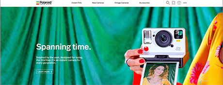

Site Goal(s): Polaroid Originals site goal is to sell instant film, new cameras, vintage cameras and accessories. It is also to inform and educate folks on Polaroid cameras. I feel it is also entertaining with the video.
Target Audience: This site is geared toward people who enjoy taking photography. I feel that older folks who grew up using these might be interested in the vintage versions. I feel that it is more trendy for the younger folks who have never used a Polaroid camera to want one of the newer models. For example, my 12 year old daughter had to have one of these newer models. The instant gratification of taking a photo and getting a print right now is new and exciting for her. Besides being interested in photography, I feel that the demographics of this person would be more on the artsy and creative side to want to use one of these again.
Navigation: The home page has an animated video advertisement and includes a button that says “learn more” that you can click on to learn how people are using Polaroid cameras today. There are 4 menu items at the top that are words. From there you can scroll down to browse all the information and graphics on that menu item. To the right of the main menu items are icons that allow you to search, sign in or make an account and to view your cart. Page names change to match the navigation links you go to. All topics are accessible from the home page.
Usability Issues (Ease of Use): This site is easy to use and can be browsed through quickly, it is memorable and obvious how to use. I had no errors while using it and it was very pleasant and simple to use.
Content: The content is well written, easy to understand and free from typos. It is informative, creative and fun.
Design/Layout: This site is colorful, the pages all change to different bold colors and the video and photos are all full color. It is organized and simple though. The pages of information are acroos the full screen but as you scroll down the different blocks of information are separated by color so you can easily see where the next subject matter begins. It flows nicely and keeps you interested.
Site Goal(s): This site is to educate and inform people of the history of icons, I believe it is also for entertainment. If you like the site, you are able to go to Futuramo’s site from there to learn about them. So I believe the second goal is to sell their creative services.
Target Audience: Futuramo offers a suite of project management tools for creative teams. They also provide a set of smart apps designed to foster collaboration between teams. So their target audience would be potential clients in the creative field, but also people in the creative field or not, that want to check out this cool “History of Icons” site. It also allows the user to send them ideas and other vintage icons to include on the site.
Navigation: The navigation of this site starts with a “Futuramo” logo on the left, who is the company that created this site. It takes you to their site, a different site, so you need to hit the back button to get back to the “History of Icons”. Next to that there is a “History of Icons” drop down menu that contains 4 primary menu items. To the upper right side there is an icon that takes you to the home page. There is an information icon that explains the purpose of this site and then another icon that takes you to their different social medias to follow. Down the right hand side of the page are more navigation elements which are circles that take you through
different time periods of icons and there is an icon to share the page. The home page contains links to all primary topic pages. The page names do change to match the page you are on. You are able to scroll down the pages.
Usability Issues (Ease of Use): There is a lot happening on this home page, so it took me a second to figure out where to click first. But you can simply scroll all the way down the “History of Icons” page and view every section of it without going to different menu items. I didn’t expect to be taken to a different website when I clicked on the “Futuramo” icon, but then I got it. Tasks are performed quickly with no errors. I enjoyed the design.
Content: The site is well written and free from typos. It is informative and interesting, if you like art and nostalgia.
Design/Layout: This site is artsy, colorful, retro and fun. Bright, bold blocks of color contain all information in a scattered block grid (that is really organized). All the pages have great contrast and balance with the bright color blocks on a dark background. The content includes bolded words for emphasis. It had a good, easy flow.